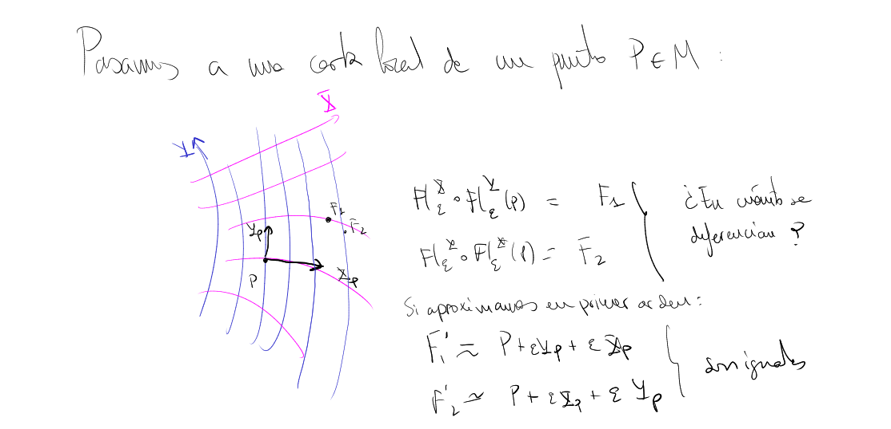
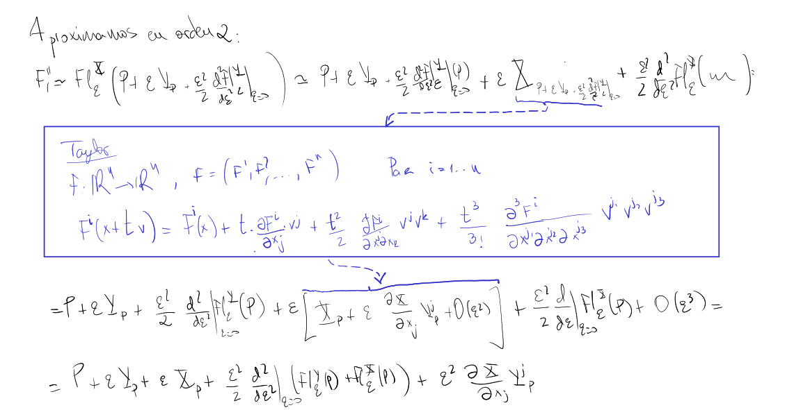
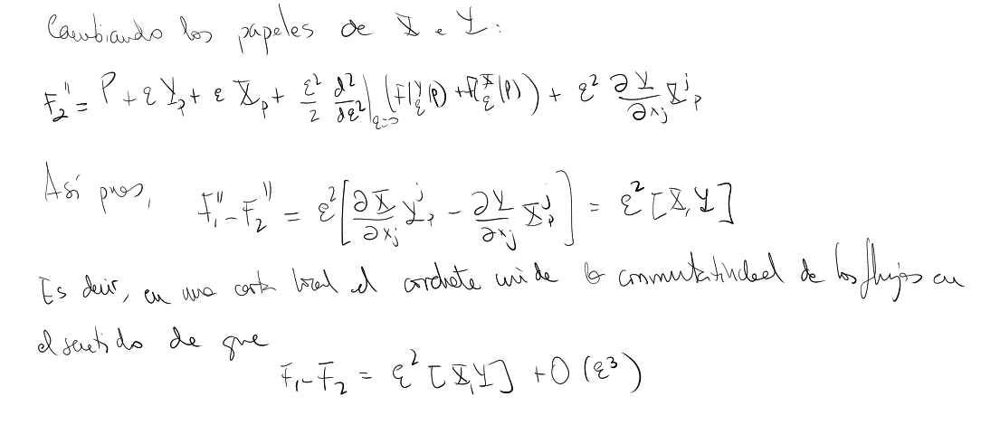

Lie bracket
Definition
Si $X$ e $Y$ son dos campos de vectores en una variedad $M$ definimos un nuevo campo de vectores $[X,Y]$ mediante la expresión
$$ [X,Y](p)(f)=X(p)(Y(f))-Y(p)(X(f))) $$Hay que demostrar que es un campo.
Visualization
Lie bracket of two vector fields, $[u,v]$, measures how is the gap when we try to draw a rectangle along flow lines of $u$ and $v$. Let' see:
Let's go to a local chart $U$ with coordinates $x_i$. If $u=u^i \partial x_i$ and $v=v^i \partial x_i$ we have that
$$ [u,v]=\left( u^j \frac{\partial v^i}{\partial x_j}- v^j \frac{\partial u^i}{\partial x_j} \right) \partial x_i $$On the other hand, consider a point $P$, in the local chart. Let's call $\varphi$ to the flow of $v$ and $\phi$ to the flow of $u$. If we move a little amount $\epsilon$ from $P$ following $v$ we arrive to a point $R$ that can be approximated by:
$$ \varphi_P(\epsilon)=R=P+\epsilon v_p+O(\epsilon^2) $$Let's call $R'=P+\epsilon v_p$. Now we can move along the flow of $u$. If we moved from $R$ we would arrive to, say, $S$ (the perfect final position), but if we begin in $R'$ we will arrive to $S'$. But since we are approximating, we actually arrive to a certain $S''$ in the following way:
$$ \phi_{R'}(\epsilon)=S'=R'+\epsilon u_{R'}+O(\epsilon^2) $$where we take $S''=R'+\epsilon u_{R'}$

But observe that
$$ S''=P+\epsilon v_P+\epsilon\left(u_P+\epsilon\frac{\partial u^i_P}{\partial x_j} v^j_P+O(\epsilon^2) \right)= $$ $$ =P+\epsilon v_P+\epsilon u_P+\epsilon^2 \frac{\partial u^i_P}{\partial x_j} v^j_P+O(\epsilon^3) $$If we begin our "whole approximated journey" from $P$ but beginning with the flow of $u$ instead, we would arrive to a certain $T''$, such that:
$$ T''=P+\epsilon u_P+\epsilon v_P+\epsilon^2 \frac{\partial v^i_P}{\partial x_j} u^j_P+O(\epsilon^3) $$So the vector $T''-S''$ (remember we are in a local chart) is
$$ T''-S''=\epsilon^2[u,v]_P+O(\epsilon^3) $$So $[u,v]$ measures the failure to close a parallelogram, in some sense.
Here is a picture from TRTR, by Penrose.

Esto está formalizado en el teorema 7.12 del \cite{boothby}, que dice lo siguiente:
Theorem
Sean $X$ e $Y$ dos campos de vectores diferenciables en una variedad $M$. Entonces $[X,Y]=0$ en todo $M$ si y sólo si para cada $p \in M$ existe un $\delta_p >0$ tal que $X_s \circ Y_t(p)=Y_t\circ X_s(p)$ para $s,t <\delta_p$.
$\blacksquare$
Proof
TFG Adrián Ruíz, teorema 4.2.
$\blacksquare$
Idea
(I think is the same as above, review and delete if needed)
To see the idea of Lie bracket, we are going to consider a local chart around a point $P$, and to use the Taylor expansion theorem in two ways: for a curve in $\mathbb{R}^n$ and for a map $\mathbb{R}^n\rightarrow\mathbb{R}^n$:



On the other hand, see TFG Adrián Ruíz for another approach of the Lie bracket as generating a zero velocity curve (lema 4.2. y lema 4.3.)
Useful formula
Also we have the following formula for the Lie bracket (Wikipedia, Lie bracket of vector fields):
$$ [X, Y]_{p}=\left.\frac{1}{2} \frac{\mathrm{d}^{2}}{\mathrm{d} t^{2}}\right|_{t=0}\left(\Phi_{-t}^{Y} \circ \Phi_{-t}^{X} \circ \Phi_{t}^{Y} \circ \Phi_{t}^{X}\right)(p)= $$ $$ =\left.\frac{\mathrm{d}}{\mathrm{d} t}\right|_{t=0}\left(\Phi_{-\sqrt{t}}^{Y} \circ \Phi_{-\sqrt{t}}^{X} \circ \Phi_{\sqrt{t}}^{Y} \circ \Phi_{\sqrt{t}}^{X}\right)(p) $$where we are denoting the flows of the vector fields by $\Phi_t^X$.
Proof
TFG Adrián Ruíz, teorema 4.3.
Coordinates expression for the Lie bracket
If $u=u^i \partial x_i$ and $v=v^i \partial x_i$ we have that
$$ [u,v]=\left( u^j \partial _{x_j}{v^i}- v^j \partial_{x_j}{u^i} \right) \partial x_i $$Other remarks
- It can be shown that is the same as Lie derivative of vector fields.
- It is bilinear, and also satisfies
- Alternativity: $[x, x]=0$
- Jacobi identity: $[x,[y, z]]=[[x, y], z]+[y,[x, z]$
- If we abstract the properties of the Lie bracket we arrive to the notion of Lie algebras.
- Lie bracket has to do with Clairaut's theorem: $[\partial_{x_i},\partial_{x_j}]=0$.
________________________________________
________________________________________
________________________________________
Author of the notes: Antonio J. Pan-Collantes
INDEX: